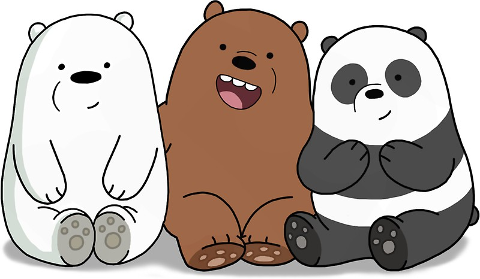

Home | Raster | Vector | Time Based Media | Print Layout | Contact
Greetings. My name is Ethan. I'm the white bear on the left. The brown one is Grizz and the black and white one is Panda. They're my brothers. They make fun of my limited vocabulary. So, my goal is to become an animator and make videos about me. This assignment shows examples of skills on Adobe. Enjoy.